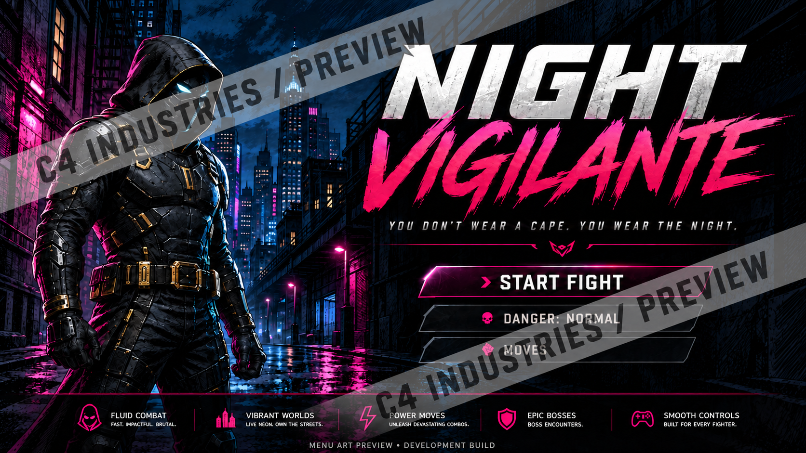

Off-screen creative play
World planners, character sheets and game-design activities aimed at the adult purchaser and the child's creative interest.
C4 ORIGINAL PROJECTS / IN DEVELOPMENT
Night Vigilante brings C4’s New York visual direction into a game project. Cornerworks turns a small room into a place to build. Follow the work as artwork and prototypes move toward real play testing.
See the current projects ↓
THREE CREATOR LANES
An eight-year-old game fan and an eighteen-year-old Roblox Studio creator are not the same customer. C4 separates the ideas instead of throwing everything into one “gaming” bucket.
World planners, character sheets and game-design activities aimed at the adult purchaser and the child's creative interest.
Original avatar concepts, level-planning tools, digital art and beginner creator resources without branded game copying.
Original props, UI kits, modular environments, plugins and other creator tools after real engine testing.
CURRENT PROJECTS
These are development previews. Neither project is presented as a finished game or a tested asset pack for sale.
GAME IN DEVELOPMENT
A neon city, a sharper menu and an original C4 visual direction. The updated menu artwork is integrated into the local game project. Hands-on graphical play testing is still needed before release or gameplay claims.
The public image is a watermarked promotional variant of the menu illustration. AI-assisted artwork with C4 direction and review; not a gameplay screenshot.
ROOM PROTOTYPE
An original modular room kit for creators who want a useful place to start. A ready-to-open Roblox Studio test file is prepared. Import, doorway movement and Output checks remain before C4 claims compatibility or puts the pack on sale.
The next step is a real Studio play test. No finished asset-pack sale is claimed.
WHY ROBLOX CREATOR TOOLS ARE INTERESTING
Roblox's Creator Store is a marketplace for development assets such as models, plugins, UI elements and other resources. Roblox currently allows eligible sellers to sell models and plugins in U.S. dollars, subject to its seller and asset requirements.
C4 is not claiming seller eligibility or compatibility yet. This is a research path. Any C4 asset has to be original, pass technical testing, and meet the platform's current rules before it is presented as a Roblox creator product.
Read Roblox's official Creator Store documentation ↗THE C4 ORIGINALITY RULE
Roblox, Fortnite, Minecraft and meme culture can tell us what people enjoy. They do not give C4 permission to copy logos, characters, skins, screenshots or other protected assets.
What mechanic, mood or creative behavior is resonating?
What underlying human interest can C4 address in an original way?
Test the actual files, platform fit and buyer response before scaling.
CREATOR LAB
Follow the studio as experiments turn into useful, tested work.